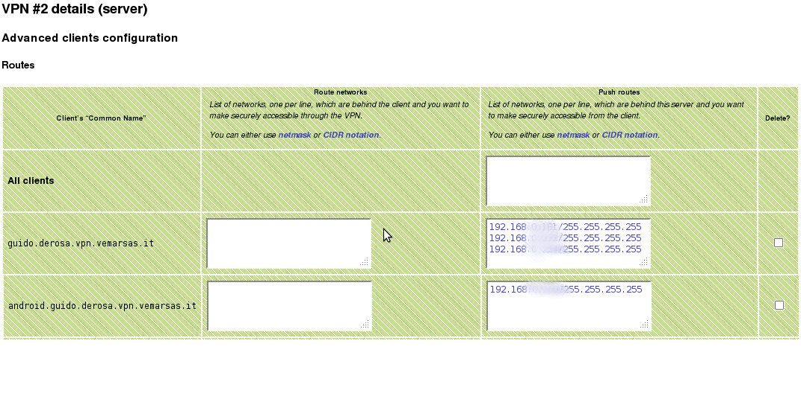

A Linux-based Network Security, Access Control and Virtualization Appliance
Introducing MARGAY, a ReSTful firewall, VPN router, AAA server, Web Content Filter and Private Cloud Management System
Guido De Rosa

Margay is a complete system
- But you can get the web interface alone (a Sinatra application)
- http://github.com/gderosa/onboard
- And get it deployed on your own hardware...
- ...with some sysadmin work ;)
- We support Acrosser, Jetway, HP, ...
Not-So-Embedded
- A standard x86(_64) machine with GHz CPU and GiB+ RAM
- Can run DansGuardian + ClamAV (and afford content scanning)
- Can host a MySQL server, necessary for RADIUS AAA (something OpenWRT can not)
- Can run multiple QEMU/KVM virtual machines (in production: ERP, VoIP, Linux and Windows servers, etc.) (also with real hardware passed-through)
- A Cluster of MARGAYs: distributed storage, private clouds, ...
Not-So-Embedded
- Debian-based
- ...but 99% independent upon distro-specific features
- Porting to non-Linux Unices would be non-trivial instead (iproute2, iptables, ...)
~/.onboard/etc/config(instead of /etc)- Starts / stops / restores services on its own...
- ...but un-managed services still handled by distro init scripts
Lots of features...
- ...but this ain't a trade fair
class OnBoard
class Controller < Sinatra::Base

Why Sinatra (and Ruby)?

- Lightweight (duh!)
- RESTful in a natural way
- Why RESTful?
- Poor-man SNMP… ?
- Each (human-readable) HTML page also provides JSON (and Ruby objects, in development)
- Error messages are HTTP statuses (even in the UI)
- Sound URLs:
/network/interfaces/eth0.html
RESTful Top-bar

/network/openvpn.json
},
"subject": {
"C": "IT",
"ST": "NA",
"L": "Napoli",
"O": "Vemar sas",
"CN": "napoli.vpn.vemarsas.it",
"emailAddress": "guido.derosa@vemarsas.it"
},
"not_before": "2011-04-11 16:39:44 UTC",
"not_after": "2021-04-08 16:39:44 UTC"
},
"dev-type": "tun",
"dev": "ovpn_tun1",
"client": {
"Virtual Address": "10.179.239.10",
"Bytes Received": "2000468",
"Bytes Sent": "1893847",
"Connected Since": "2011-04-11 17:47:39 +0000"
},
"remote": [
{
"address": "78.7.85.162",
"port": "1194",
"proto": "udp"
}
MVC
- Although Sinatra doesn't force you...
controller/network/interfaces.rb (routes)lib/onboard/network/interface.rb (backend logic)views/network/interfaces.html.erubis (templates)
Ancillary gem #1: hierarchical_menu
- Very simple JS + CSS + Plain Ruby
root.add_path('/aaa/bbb/ccc/ddd', {
:name => 'test1',
:href => '/xxx/yyy/zzz.html',
:custom_info => SomeStuff
})root.to_html_ul do |node, output|
if node.content[:custom_info].some_check
output[:extra_class] = 'hmenu-selected' # Expand
output[:href] = nil # No hyperref
end
end
Policy Routing
- Route traffic according to its...
- ...source
- ...incoming network interface
- ...incoming physical port (within a bridge)
- ...QoS classification (DSCP)
Policy Routing
- Full power of
ip rule and iptables -t mangle
- As a sidenote: there is a standard Unix way to listen on a TCP socket...
- ...but no portable way to assign IP addresses, IP routes, IP filters...
- The rude and simple way:
system()
- The sophisticated way: RTNETLINK (not my choice, though)
SSL and VPN
modules/easy-rsamodules/openvpn
SSL and VPN

SSL and VPN

SSL and VPN
Captive portal, AAA
modules/chillimodules/hotspotloginmodules/radius-adminmodules/radius-core- hotspotlogin gem
Ancillary gem #2: HotSpotLogin.rb

Web Content Filter
modules/dansguardian-
Ancillary gem #3, #4: dansguardian and configfiles
Integrating Captive Portal and Web Filtering
- User attempts to surf the web
- Gets redirected to a login page
- After authentication and authorization, traffic is accounted
- Differentiated, transparent content filters (according to which user you are and which group you belong)
- Public WiFi, Schools, ...
- Virus scanning, children safety...
Integrating Captive Portal and Web Filtering
The SQLAuth DansGuardian plugin
http://github.com/gderosa/dansguardian
- Non-trivial (as the IP plugin)
- OS/network architecture independent (compared to NTLM)
- Compatible with transparent proxies (no Proxy-based Auth)
- C++ development on top of the SOCI library
Anatomy of a module (or how to create your own)
Plugin Anatomy
- Same directory layout of core
Sinatra::Base has been opened to allow multiple paths for static files and views- Installing and uninstalling is just a matter of copying or deleting a directory
- Current example: the ChilliSpot module
modules/chilli/load.rb
class OnBoard
module Network
module AccessControl
class Chilli
ROOTDIR = File.dirname(__FILE__)
CONFDIR =
"#{OnBoard::CONFDIR}/network/access-control/chilli"
$LOAD_PATH.unshift ROOTDIR + '/lib'
if OnBoard.web?
OnBoard.find_n_load ROOTDIR + '/etc/menu'
OnBoard.find_n_load ROOTDIR + '/controller'
end
end
end
end
CHILLI_CLASS = Network::AccessControl::Chilli # a shortcut
end
Menu
modules/chilli/
etc/menu/network/access-control/chilli.rb
class OnBoard
MENU_ROOT.add_path('/network/access-control/chilli', {
:href => '/network/access-control/chilli',
:name => '“Chilli” Controller',
:desc => 'Redirects unauthenticated users to a login page',
:n => 0,
:children => %r{^/network/access-control/chilli/.*}
})
end
Sinatra routes
modules/chilli/
controller/network/access-control/chilli.rb
put '/network/access-control/chilli/:ifname.:format' do
...
else
raise CHILLI_CLASS::BadRequest, "UAM passwords do not match!"
end
else
raise CHILLI_CLASS::BadRequest, "Wrong UAM password!" unless
params['conf']['uamsecret'].length == 0 and
...
rescue CHILLI_CLASS::BadRequest
status 400
msg[:err] = $!
msg[:ok] = false
end
The format helper
modules/chilli/
controller/network/access-control/chilli.rb
put '/network/access-control/chilli/:ifname.:format' do
...
# refresh
all = CHILLI_CLASS.getAll()
chilli = all.detect{|x| x.conf['dhcpif'] == params[:ifname]}
format(
:module => 'chilli',
:path => '/network/access-control/chilli/ifconfig',
:format => params[:format],
:objects => chilli,
:msg => msg
)
else
not_found
end
Stuff under lib/ ...
modules/chilli/
lib/network/access-control/chilli.rb
require 'onboard/extensions/ipaddr'
require 'onboard/system/process'
require 'onboard/network/interface'
require 'onboard/network/interface/ip'
class OnBoard
module Network
module AccessControl
class Chilli
...
class BadRequest < RuntimeError; end
...
Stuff under lib/ ...
modules/chilli/
lib/network/access-control/chilli.rb
...
class Chilli
...
def self.parse_conffile(filename)
h = {}
return h unless File.exists? filename
File.foreach(filename) do |line|
line.sub! /#.*$/, ''
if line =~ /(\S+)\s+(.*)\s*$/
opt, arg = $1, $2
...
Stuff under lib/ ...
modules/chilli/
lib/network/access-control/chilli.rb
...
class Chilli
...
def self.parse_conffile(filename)
...
def self.create_from_HTTP_request(params)
...
def self.validate_conffile(h) # based on chilli_opt(1)
...
Stuff under lib/ ...
modules/chilli/
lib/network/access-control/chilli.rb
def initialize(h)
if h[:process]
# Running Chilli instance
@process = h[:process]
@conffile = conffile()
@conf = self.class.parse_conffile(@conffile)
@managed = managed?
elsif h[:conffile] and not h[:conf]
# Not running, but a configuration file exists
@process = nil
@conffile = h[:conffile]
@conf = self.class.parse_conffile(@conffile)
@managed = managed?
dynaconf_coaport unless @conf['coaport'].to_i > 0
elsif h[:conffile] and h[:conf]
# We will have to (over-)write a configuration file
@conffile = h[:conffile]
@managed true
@conf = h[:conf]
Save and Restore
modules/chilli/
lib/network/access-control/chilli.rb
class Chilli
def self.save
FileUtils.mkdir_p File.dirname SAVED_DAT_FILE
all = getAll
File.open SAVED_DAT_FILE, 'w' do |f|
f.write Marshal.dump(getAll)
end
end
def self.restore
if File.exists? SAVED_DAT_FILE
all_saved = Marshal.load File.read SAVED_DAT_FILE
all_saved.map{|chilli| chilli.start if chilli.running?}
end
end
...
SysV-like init hooks
modules/chilli/
etc/restore/60chilli.rb
require 'onboard/network/access-control/chilli'
OnBoard::Network::AccessControl::Chilli.restore
modules/chilli/
etc/save/chilli.rb
require 'onboard/network/access-control/chilli'
OnBoard::Network::AccessControl::Chilli.save
Want to develop?
- Ok, you deserve better docs ;-)
-
Most wanted plugins:
- IPSec vpn (talk to Cisco devices and mobile clients)
- Intrusion detection (Snort)
- VLAN
- PPPoE, PPPoA
- GPL